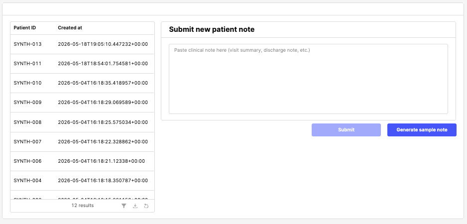

📺 See the real Retool app in action
A guided walkthrough of the live product. Architecture, design decisions, and the full phase history are in PRODUCT.md. Below this section you'll find a static mock of the dashboard with two interactive demo buttons that simulate the Phase 3.5 cascade and Phase 3.6 update flow in-browser — no backend required.
1. Cover screen — patient list + new-patient submit

2. Patient detail view

3. Clinician sign-off (per panel)

4. Generate guided questions on demand

5. Phase 3.6 — in-session update


summaries row, re-ingests the cumulative narrative to Pinecone, then fires the cascade (Pattern / Lab / Dx Sync) on the cumulative data. The status line cycles through "Saving update…" → "Re-analyzing…" → "Chart updated".
<mark> yellow highlights on every span that's new or changed in this update — across Chief Complaint, HPI, Medications, Diagnoses, Labs, and Assessment & Plan. Unchanged content carries forward without highlight. History is preserved in the append-only summaries table for diff + retrieval; the UI shows the latest version via the helix_patient_latest view.Additional screenshots in screenshots/ not shown inline
2-select existing patient.png— patient row selection feedback3b-view existing patient ext.png— extended detail view (scrolled)4b–4e-mark review *.png— sign-off applied to Patterns, Labs, Dx Exclusions, and Questions panels (same pattern as 4a)5a-questions button.png,5b-questions select generate.png— pre-generation empty state + in-flight6a-generate note button.png— empty Update Note panel before generation